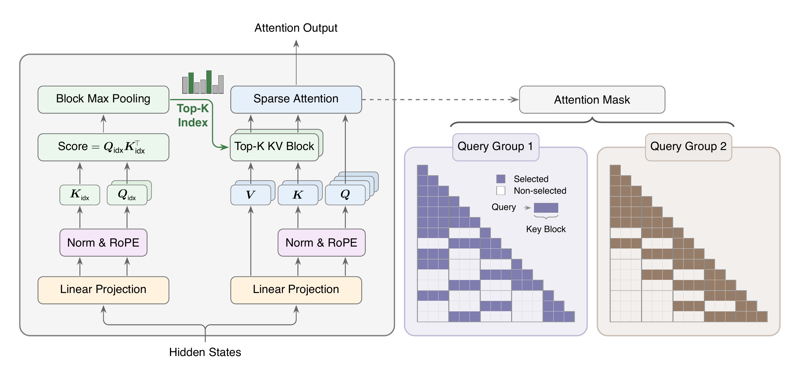
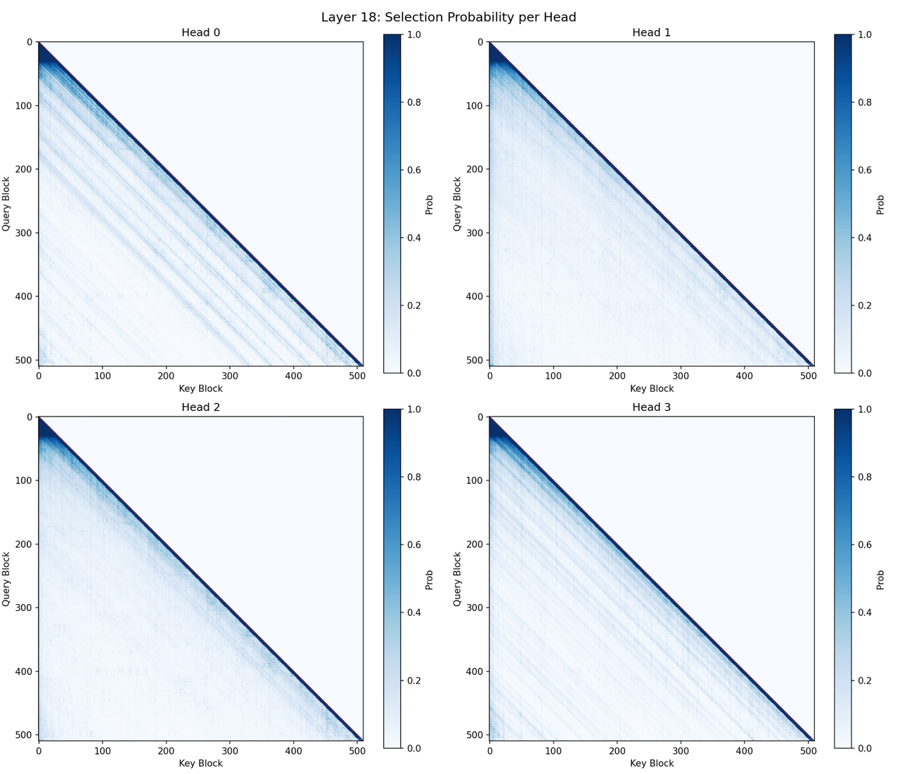

TL;DR · 一句话核心
MSA 在标准 GQA 上挂一个极轻量的「索引分支」：它用分块打分为每个 GQA 组独立挑出 Top-k 个 KV 块，「主分支」只对这些被选中的块做精确 softmax 注意力。于是每个 token 的注意力预算被固定下来，不再随序列长度增长。
结果：在 109B MoE 模型上，MSA 质量与稠密 GQA 基本持平，但在 1M 上下文下把每 token 注意力计算量降到 1/28.4，配合自研 kernel 实现 14.2× 预填充 与 7.6× 解码 的真实墙钟加速（H800）。
- 简单优先（奥卡姆剃刀）：相比 NSA 的三分支、DSA 的 token 级索引，MSA 只加 2 个投影矩阵，做「按组、按块」的 Top-k 选择，更易在各类 GPU 上高效落地。
- 分组独立检索：每个 GQA 组挑自己的块，既保留多样性，又让 KV 读取保持连续、对硬件友好。
- 算法 × kernel 协同设计：免 exp 的 Top-k、KV-outer 的稀疏注意力排布，把理论稀疏真正变成墙钟加速。
01要解决什么问题
长上下文正在成为前沿大模型的刚需，但稠密注意力的二次方开销让它在部署时「算不起」。
智能体工作流、仓库级代码推理、持久记忆——这些场景都要求模型同时关注几十万到上百万个 token。但传统 softmax 注意力的计算量是 Θ(2·Hq·N²·dh)，随序列长度 N 二次方增长。当上下文拉到百万级，注意力就成了训练和推理（尤其是生产部署的延迟/吞吐）的最大瓶颈。
社区的核心矛盾是：在「模型质量」和「效率」之间找平衡点。怎样在几乎不损失能力的前提下，把注意力开销从「随长度暴涨」压成「与长度脱钩」？这就是 MSA 要回答的问题。
02已有方案怎么做、卡在哪
三条主要路线，各有取舍。MSA 属于其中第三条「原生可训练稀疏」，并在该家族内做了简化。点击卡片展开细节。
做了什么：把昂贵的 softmax kernel 换成线性复杂度的近似（线性注意力），或换成状态空间模型（Mamba）的选择性递归；混合架构则把一部分全注意力层替换为线性层或滑动窗口层，只保留少量二次方层。
怎么做：核心是降低或消除对全序列的二次方依赖，用固定大小的状态或固定窗口来概括历史。
卡在哪：这类方法或多或少牺牲了精确 softmax 的表达能力，长程精确检索能力可能受限；滑动窗口是「位置固定、与内容无关」的模式，难以动态命中远处真正重要的 token。MSA 的消融也显示：在等算力预算下，固定滑窗的困惑度明显高于动态选择。
做了什么：在一个稠密预训练好的骨干上，只在推理时构造稀疏支撑：H2O / SnapKV 按累计注意力统计裁剪 KV cache；Quest 做按页的重要性估计；MInference / FlexPrefill 在预填充阶段分派按头的稀疏 kernel；InfLLM 维护 sink + 局部窗口 + 可检索 chunk。
怎么做：用启发式或统计量近似「哪些 KV 重要」，不改动训练。
卡在哪：它们仍要承担全注意力的训练成本，并且至少有一个推理阶段接近稠密速度；训练与推理不一致也可能带来质量损失。MSA 选择把索引器在预训练阶段就一起学好，让模型从一开始就适配稀疏模式。
做了什么：把稀疏选择器作为模型的一部分原生训练。NSA 面向 MQA/MHA，用三条并行分支（压缩注意力做粗粒度全局、选择注意力做细粒度块、滑动窗口做局部）；MoBA 也基于 GQA，但用很大的 KV 块、靠块平均 key 打分，且索引器只靠语言建模梯度训练；DSA 架在 MLA 的 MQA 模式上，用多头 ReLU 轻量索引器对 token 逐个打分，所有 query 头共享一份 Top-k，是 token 级选择。
怎么做：共同点是「先选后算」——先由索引器决定关注哪些 key/块，再在子集上做注意力。
MSA 在这家族里的差异（两点同时成立）：
- 按 GQA 组共享 Top-k：每个组独立选块，得到多组、块粒度的检索多样性。
- 块级选择 + 连续 KV 读取：保持对张量核友好的访存，并放宽了 NSA 等对 head 维度的约束，更易在更广的 GPU 上高效执行。
03本文方法：MSA 的两条分支
这是全文重头戏。MSA 把「稀疏注意力」拆成两个阶段：先由索引分支选块，再由主分支在选中的块上做精确注意力。

- 共享输入：两条分支都从同一份 Hidden States 出发，各自做 Linear Projection 与 Norm & RoPE。注意索引分支的输入被施加了 stop-gradient（梯度截断），与主干解耦。
- 索引分支（左，绿色）：只生成轻量的 Qidx / Kidx，算出打分 Score = QidxKidx⊤，再做 Block Max Pooling（把 token 级分数按块取最大值）得到块分数，最后 Top-K Index 选出 k 个 KV 块。
- 主分支（右，蓝色）：正常算 Q / K / V，但只取索引分支选出的 Top-K KV Block，做 Sparse Attention 输出结果。绿色箭头表示「索引结果」在控制主分支读哪些块。
- 最右掩码（数据流的产物）：纵轴是 Query、横轴是 Key Block，下三角为因果可见区。Query Group 1（紫）与 Query Group 2（棕）在共享局部对角线之外，选中的远程块各不相同——这正是「分组独立 Top-k」的可视化。
- 一句话总结：左边「廉价地决定看哪里」，右边「精确地只算那几块」；预算固定为 k 个块，因此与序列长度脱钩。
索引分支 Index Branch
为每个 GQA 组配一个索引 query 头，所有组共享一个索引 key 头（只新增 2 个投影矩阵 Wqidx、Wkidx）。
对每个 query 位置 i 与组 r：先算 token 级分数，再按块取最大值聚合成块分数 M，最后选 Top-k 个块。
I = TopK(M, k) ∪ {当前局部块}
主分支 Main Branch
拿到块索引集合 I 后，只对这些块里「因果可见」的 token 做标准缩放点积注意力；同组的多个 query 头共享同一份块选择，但各保留自己的 query 投影。
由于选中块最多含 k·Bk 个 token，单 query 的注意力代价从 O(N) 降到 O(k·Bk)——一个不随 N 增长的固定预算。
论文里采用的默认配置是 块大小 Bk=128、每组每 query 选 k=16 个块，对应每个 query 仅 2,048 个 token 的注意力预算（无论上下文是 128K 还是 1M）。此外，当前位置所在的局部块永远被选入，保证 query 至少能看到自己的邻域，稳定训练。
复杂度：差距随 N 线性拉开
FMSA(N) = Hkv·didx·N² （索引分支，轻量） + 4·Hq·dh·N·k·Bk （主分支，与 N 线性）
GQA 的主注意力路径随上下文长度二次方增长；MSA 的主分支只花费固定预算 k·Bk，再加一个轻量的索引计算。当 k·Bk ≪ N 且 Hkv·didx ≪ Hq·dh 时，两者的 FLOPs 差距随 N 越拉越大——这正是长上下文下加速比不断变大的根源。
04一步步看：MSA 如何选块
下面用一个 GQA 组、12 个块的玩具例子，复现 MSA「打分 → Top-k → 稀疏注意力」的真实流程。点「下一步」推进。
注：真实配置每组每 query 选 16 个块（每块 128 token），且每个 GQA 组各选各的——上图若换成另一个组，被选中的远程块会不同，但局部块与起始 sink 块通常被共享。
05怎么训练这个「选择器」
Top-k 选择不可导，语言建模损失无法直接训练索引投影。MSA 用一个 KL 对齐损失把索引器「教会」，再配三个稳定化技巧。
- KL 对齐损失：让索引分支的打分分布 Pidx 去逼近主分支（按组内多头平均后的）注意力分布 P。这给了索引器一个直接的学习信号，使它选出的块「在语义上确实是主分支想看的块」。
- 梯度截断（Gradient Detach）：对索引分支的输入做 stop-gradient，并对教师分布 P 做 detach。于是 KL 损失只更新两个索引投影 Wqidx、Wkidx，既不污染主分支，也不会经由 X 反传回主干——索引器成为一个干净的「纯选择器」。
- 索引器预热（Indexer Warmup）：前若干步两条分支都跑全注意力，只用 KL 训练新加的索引投影；预热后再切换到稀疏注意力。把稠密 checkpoint 转稀疏时同样用这套预热，先对齐索引再交给它控制路由。
- 强制局部块（Local Block）：当前 query 所在块在训练/推理中永远入选，预留一个槽位给邻域，避免退化选择。
总损失为 ℒ = ℒLM + λ · Σlayers ℒKL，即语言建模损失加上各层 KL 对齐损失的加权和。
查看 Algorithm 1：单个 MSA 层的训练前向 + KL 损失 伪代码 7 行：投影 → 索引打分 → Top-k → 稀疏注意力 → 输出 → 计算 KL
# 输入：hidden states X ∈ R^(N×d_model)；块大小 B_k；选块数 k 1: Q, K, V ← X·W_q , X·W_k , X·W_v // 主分支 Q/K/V 2: Q_idx, K_idx ← stopgrad(X)·W_q^idx , stopgrad(X)·W_k^idx // 索引投影，已 detach 3: M_idx ← BlockMaxPool(Q_idx, K_idx, B_k) // 块分数，按组、因果 4: I ← TopK(M_idx, k) // 选中块；局部块强制并入 5: O ← TopKAttn(Q, K, V, I) // 只对选中块做注意力 6: output ← O·W_o 7: L_KL ← KLdiv(Q_idx, K_idx, stopgrad(Q), stopgrad(K), I) return output, L_KL
06有意思的点：算法 × Kernel 协同
理论上的稀疏不等于真实的加速。MSA 专门把算法和 GPU 执行路径一起设计，才把 FLOPs 节省兑现成墙钟时间。
- 免 exp 的 Top-k：因为 softmax 是保序的（si≤sj ⇔ softmax(s)i≤softmax(s)j），选 Top-k 只需对原始分数排序即可，前向直接跳过 max/exp/sum，把原始分数喂给选择。
- 面向小 k 的寄存器级 Top-k：Bk=128、k=16 这个甜点区让通用 Top-k kernel（radix / bitonic）反而不划算。MSA 让 warp 的 32 个 lane 各扫一段、各维护一个 k 元最小堆，最后做 k 轮 shuffle 归并；共享内存按 lane 映射到固定 bank，避免冲突。
- KV-outer 的稀疏注意力：把选中的 KV 块放在外层循环，让每个 KV 块「召回」关注它的 query 并拼满张量核 MMA；用预排程分块 + 两阶段合并来应对「块热度极不均衡」，无需原子更新。
- 训练侧融合：把稀疏 KL 损失所需的辅助 LSE 计算融进前向；反向用持久化负载均衡。
07索引器到底学到了什么模式
把学到的索引分支「选择概率」画成热图，可以直接看到稀疏结构——它自发地恢复了稠密注意力里最关键的几类结构。

- 深色对角线：所有头都给「局部对角线」高概率——离 query 最近的块几乎总被选中，对应强制保留的局部块与邻域偏好。
- 深色最左列（sink）：每个头都稳定选中起始块（attention sink）。值得注意：即使不强制，索引器也会自发把高概率分给第一个块。
- 少数远程条纹：剩余预算被分给少量长程相对位置，形成几条淡色斜条纹。
- 分组各异：不同 GQA 组（Head 0–3）的远程条纹明显不同——这证明「分组独立 Top-k」确实学出了组特定的稀疏模式，而非塌缩成单一全局选择。
- 随深度变化：对比浅层（Layer 1）远程选择更发散，到 Layer 18 收敛成更锐利、更稀疏的几条条纹。
- 一句话总结：学到的模式 = 局部对角线 + 起始 sink + 少量组特定远程条纹，与「重要 key 高度集中」的直觉吻合。
论文进一步发现：即使不显式强制选第一个 KV 块，学到的索引器也会跨所有层和头都给起始块很高的选择概率——attention sink 现象在稀疏机制下依然自发涌现且普遍存在。
08实验结论（一句话版）
在 109B MoE、3T token 的大规模设定下：MSA 质量与稠密 GQA 基本持平，同时换来随上下文越来越大的真实加速。
训练动态上，原生稀疏预训练（MSA-PT）与全注意力基线的 LM loss 曲线几乎重合、梯度范数同量级，说明大规模下训练稀疏模型和训练稠密基线一样稳定。两条落地路线各有所长：
- MSA-PT（从头原生稀疏训练）：全程学习稀疏模式，在不少数学、图像、视频、长上下文检索基准上表现最强。
- MSA-CPT（从稠密 checkpoint 转换）：仅用 400B token 续训（含 40B 预热）即可，更保守地保留原稠密模型行为，是「已有稠密 checkpoint 时」的实用转换路线。
| 设定 | 关键配置 | 含义 |
|---|---|---|
| 模型规模 | 109B 总参 / 6B 激活，41 层 MoE | 原生多模态训练，64 query 头 / 4 KV 头 / 头维 128 |
| 稀疏预算 | Bk=128, k=16 → 2,048 token/query | 无论上下文多长，主分支预算固定 |
| 训练预算 | 3T tokens（PT）／ +400B（CPT） | PT 含 40B 索引器预热 |
| 能力保持 | 与 GQA 全注意力基本持平 | 语言/推理/多模态/智能体 PPL 无明显退化 |
局限与展望：论文坦言仍存在残余的长上下文检索差距，可通过更长的稀疏训练、推理时更大的选择预算、或更丰富的索引打分函数来缩小。由于 MSA 的三个核心决策（分组独立选择、块级粒度、KL 对齐训练的索引器）都与主流开源前沿模型共享的 GQA 骨干兼容，作者认为该配方可低成本迁移到强化学习后训练、智能体部署等长上下文成本占主导的场景。